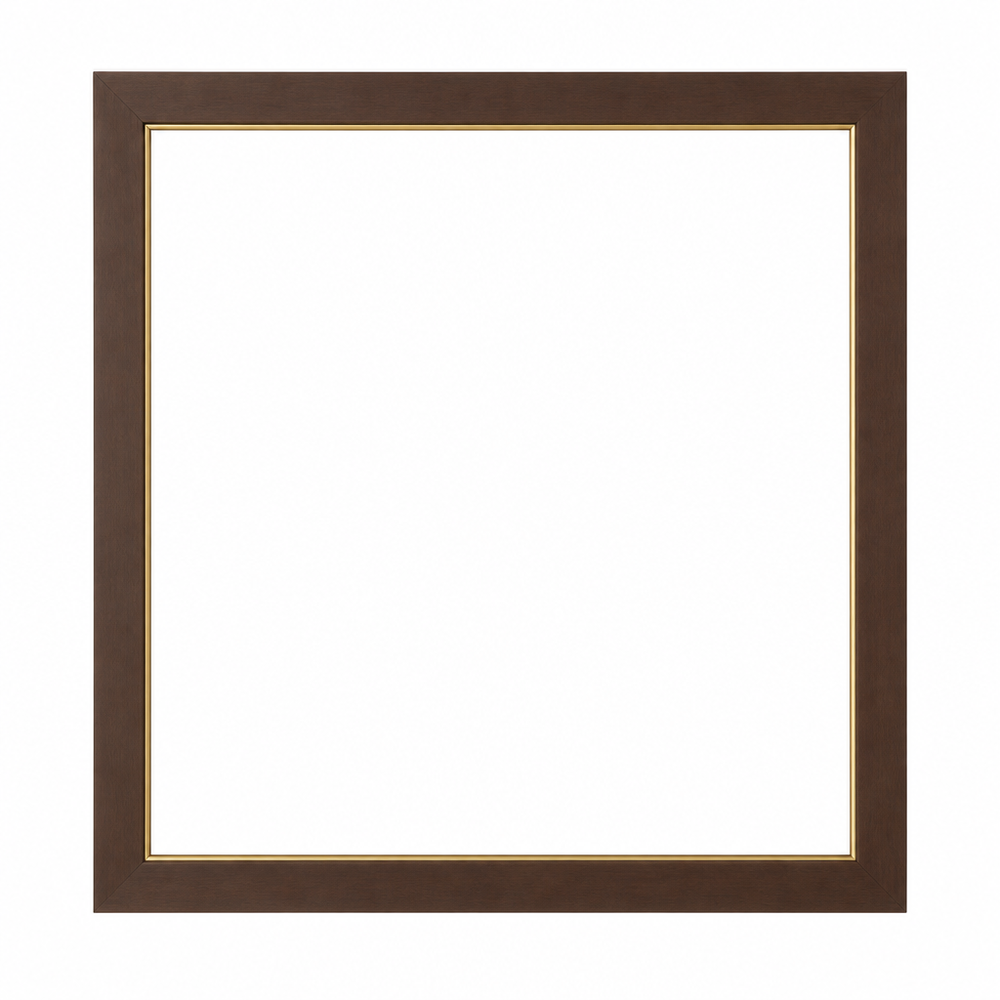

<title>Frame Mesh Check</title>
<style>
  :root {
    --ground: #f3f1ec;
    --panel: #ffffff;
    --ink: #21201c;
    --muted: #6f6b62;
    --accent: #8a6a3a;
    --line: #e2dfd6;
  }
  @media (prefers-color-scheme: dark) {
    :root:not([data-theme="light"]) {
      --ground: #171613;
      --panel: #1f1e1a;
      --ink: #ece9e2;
      --muted: #9b968b;
      --accent: #c79a5c;
      --line: #322f28;
    }
  }
  :root[data-theme="dark"] {
    --ground: #171613;
    --panel: #1f1e1a;
    --ink: #ece9e2;
    --muted: #9b968b;
    --accent: #c79a5c;
    --line: #322f28;
  }

  * { box-sizing: border-box; }
  body {
    margin: 0;
    background: var(--ground);
    color: var(--ink);
    font-family: "Inter", system-ui, sans-serif;
    display: flex;
    flex-direction: column;
    height: 100vh;
  }
  header {
    padding: 14px 20px;
    border-bottom: 1px solid var(--line);
    display: flex;
    align-items: baseline;
    gap: 12px;
    flex-shrink: 0;
  }
  h1 {
    font-size: 15px;
    font-weight: 600;
    margin: 0;
    letter-spacing: 0.01em;
  }
  .meta {
    font-size: 12px;
    color: var(--muted);
    font-variant-numeric: tabular-nums;
  }
  main {
    flex: 1;
    min-height: 0;
    display: grid;
    grid-template-columns: 1fr 1fr;
  }
  .pane {
    position: relative;
    border-right: 1px solid var(--line);
    display: flex;
    flex-direction: column;
    min-width: 0;
  }
  .pane:last-child { border-right: none; }
  .pane-label {
    position: absolute;
    top: 10px;
    left: 12px;
    font-size: 11px;
    text-transform: uppercase;
    letter-spacing: 0.06em;
    color: var(--muted);
    background: color-mix(in srgb, var(--panel) 80%, transparent);
    padding: 3px 8px;
    border-radius: 4px;
    z-index: 2;
  }
  model-viewer {
    width: 100%;
    height: 100%;
    background: var(--panel);
    --poster-color: transparent;
  }
  img.ref {
    width: 100%;
    height: 100%;
    object-fit: contain;
    background: var(--panel);
  }
</style>

<header>
  <h1>Frame Mesh Check — Frame_v1</h1>
  <span class="meta">glb · quad · 8,000 tri target</span>
</header>
<main>
  <div class="pane">
    <span class="pane-label">Reference image</span>
    
  </div>
  <div class="pane">
    <span class="pane-label">Blender-built frame (drag to orbit)</span>
    <model-viewer src="Frame_Blender_v1.glb" camera-controls auto-rotate exposure="1.1" shadow-intensity="0.6" style="width:100%;height:100%;"></model-viewer>
  </div>
</main>
<script type="module" src="https://cdn.jsdelivr.net/npm/@google/model-viewer@3.5.0/dist/model-viewer.min.js"></script>
